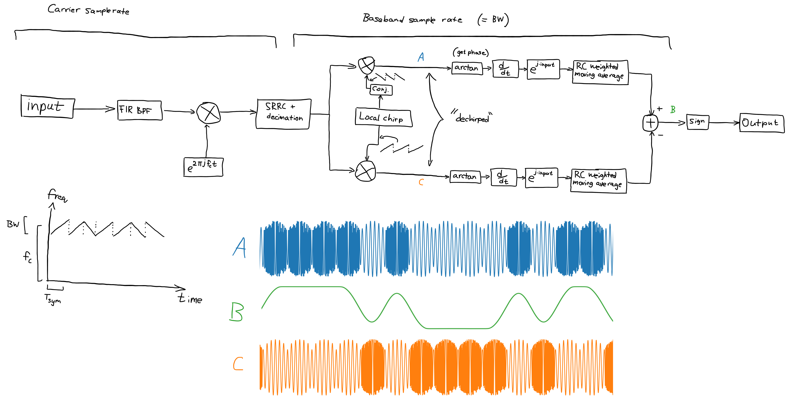

Aug 2025
This page is a bit of a stub, but after I failed to make a reliable DSSS demodulator, I tried making a chirp spread spectrum demodulator based on a custom encoding technique. The technique is very simple, it is literally linear up chirps for a '1' and linear down chirps for a '0'.
This demodulator unfortunately also doesn't work very well, but it was helpful in teaching how a few things work in the topics of DSP. Also, it worked way better than the other one and was actually able to receive a few packets of data across a speaker + microphone air gap. It just wasn't reliable enough to use on a model submarine which was what I originally wanted to use it for.
Here is a diagram of how it works. Actually, I ended up switching out the arctan + d/dt + phase coherence discriminator to a more simple FFT based one that just tries to sync itself to the incoming stream via a peak detector on the FFT, and this was able to be much more sensitive to signals.

Here is the code if you want to check it out (no guarantee it works): (link)